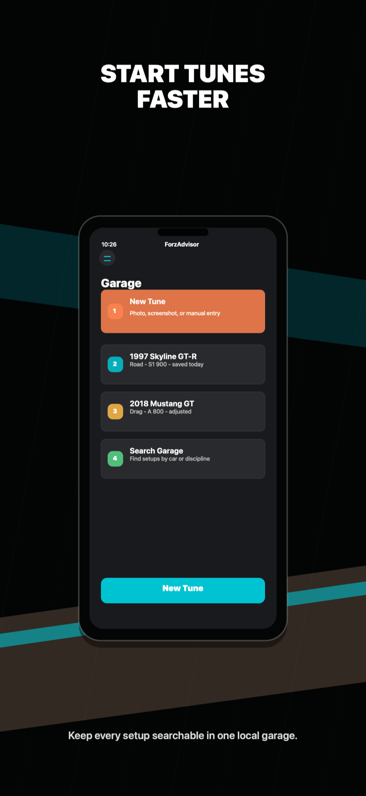
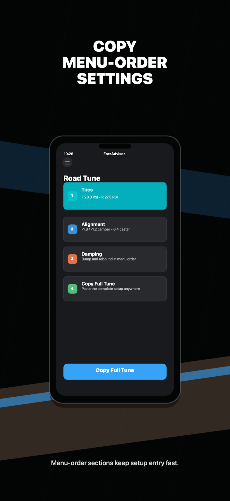

Complete delivery gates
Push the immutable candidate, require cloud verification, upload the selected build, and finish App Store metadata and privacy checks. App Review remains an explicit decision.
CLOUD VERIFY · TESTFLIGHT · METADATAOFFLINE-FIRSTIPHONEUNOFFICIAL
ForzAdvisor turns the car details you supply into menu-order guidance—then gives supported numeric workflows a structured way to refine the setup after the next run.
THE TUNING RUNBOOK
One guided loop keeps capture, confirmation, generation, and feedback in a predictable order.

INPUT WITH A CHECKPOINT
Photo and screenshot assistance can accelerate setup, while confirmation keeps every value reviewable before it affects the tune. Manual entry remains available.
OUTPUT IN THE ORDER YOU NEED IT
ForzAdvisor presents supported numeric settings in game-menu order so you can move through them methodically and get back to driving. FH5 currently produces a build plan without numeric tune values.

RELEASE TELEMETRY
The repository records a signed local release export and a green local verification plan. Distribution and broader tuning claims remain separate gates.
Push the immutable candidate, require cloud verification, upload the selected build, and finish App Store metadata and privacy checks. App Review remains an explicit decision.
CLOUD VERIFY · TESTFLIGHT · METADATACollect genuine permission-complete observations and pass the documented promotion review before enabling any FH5 numeric ruleset.
EVIDENCE · CONTROLLED TRIALS · REVIEWExtend formula coverage across disciplines and drivetrains, refresh screenshots as the UI changes, and keep physical camera and OCR behavior in the verification loop.
FORMULAS · CAMERA · OCR · ACCESSIBILITYCLEAN-ROOM COMPANION
ForzAdvisor is an unofficial companion built around user-supplied information and independently developed tuning guidance. It is not affiliated with, endorsed by, or sponsored by Microsoft, Xbox, Turn 10 Studios, Playground Games, or the Forza franchise.